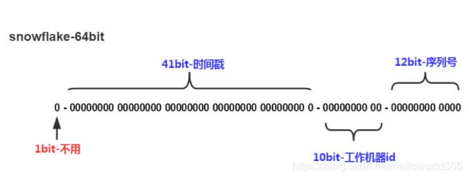

最近项目中在使用数据库中间件，采用ShardingSphere中的Sharding-JDBC，总结下最近出现的问题
分布式主键重复问题
问题描述
告警双写失败，库中新增metering和last_billing_record违反唯一主键约束
问题分析
因为涉及到分库分表，数据是分散存放的，为了避免分表中的主键不重复，所以使用分布式主键算法生成主键，目前使用的是Sharding内置的SnowFlake(Twitter开源的)算法SnowFlake算法生成ID的结构如下图：

其中工作机器id(workerId)是用来区分不同的机器而设计，上线时，未设置这个参数，默认为0，也就是线上8台服务的workerId都为0，这样就会出现某几台服务器在同一时间(毫秒)写同一张表，按照原理图可以得出时间戳一样，工作机器id一样，序列号一样，所以就出现了多台服务器同一时间用同一个主键id写表，报了违反唯一主键约束的错误
基于计费的业务特殊性，0-半点之间会跑分布式任务，所以很容易造成多台服务器同一时间写同一张表的情况
解决方案
为每台服务器设置单独的workerId，workerId取值范围0-1023
Spring Sharding配置文件是支持注入worker.id值的，但只能在配置文件配置，不能动态生成，最终会部署到8台服务器上，读的还是一个值，咨询过Sharding创始人，也没有扩展接口可以重写workerId的值
起初想过通过云翼的外挂配置文件important.properties设置workerId值，Spring配置文件再读取important.properties设置的值，不行，因为云翼上是按照az外挂的，每个az有两台服务器，那这两台服务器读取的还是一个值，还是会出现问题
最后是通过实现Spring IOC容器给我们提供的一个扩展接口BeanPostProcessor实现的，BeanPostProcessor提供了一个postProcessBeforeInitialization方法，也就是在bean初始化前可以修改worker.id的值，这样就可以为所欲为了，最终是用redis为每个服务器ip生成自增的序列值，存到redis里，每次启动时根据键ip读取redis的值，以后扩容机器接着申请即可
时钟回拨问题
问题描述
邮件告警双写失败，Cause: java.lang.IllegalStateException: Clock is moving backwards, last time is %d milliseconds, current time is %d milliseconds [1584000400088, 1584000399959]
问题分析
错误信息中Clock is moving backwards，是由于时钟回退导致，当前生成id的时间早于最后一次生成id的时间
SnowFlake生成规则依赖时间戳，这样由于时间校准，以及其他因素，可能导致服务器时间回退（时间向前快进不会有问题），如果恰巧回退前生成过一些id，而时间回退后，生成的id就有可能重复。官方对于此并没有给出解决方案，而是简单的抛错处理，这样会造成在时间被追回之前的这段时间服务不可用
恰好10.160.10.50容器的时间比其他容器的时间快1-2s，每隔一段时间发生一次时间校准，在时间校准前后都发生了insert操作，导致了当前生成id的时间早于最后一次生成id的时间，框架报错，insert失败
解决方案
- 代码方面
Sharding提供了一个扩展接口ShardingKeyGenerator，可以自己实现一套分布式id生成算法，这里只是在内置的SnowFlake基础上改进了时钟回拨导致服务不可用的问题
SnowFlake算法给workerId预留了10位，即workerId的取值范围为[0, 1023]，事实上实际生产环境不大可能需要部署1024个服务
所以采用备用workerId的方式，举例：将workerId取值范围缩小为[0, 511]，[512, 1023]这个范围的workerId当做备用workerId。workerId为0的备用workerId是512，workerId为1的备用workerId是513，以此类推……
备用workerId数量越多, 可靠性越高, 但是可部署的服务就越少
目前计费是设置了7个备份，最多能部署128个节点，足够用了
这样改后，虽然解决了不可用问题，但频繁的时钟回退导致主键不具备递增特性，根据MySql聚集索引的特性，如果主不是递增，会导致索引数据结构(B+Tree)频繁的进行分裂和平衡，随着数据量越大，性能损耗越严重
- 硬件方面
10.160.10.50容器迁移到了时钟正常的物理机上
多线程并发时路由不准确问题
问题描述
告警双写失败，更新metering或者last_billing_record条数为0，未更新成功
问题分析
通过查日志发现，同一台服务器上的两个线程操作同一张表时，路由会混乱，a线程会使用b线程的路由分片值
a线程做数据迁移，迁移的时间2019-03-14 - 2019-03-31
b线程处理Kafka消息，生成用量数据，时间是2020-03-17
两个线程并发时，a线程会使用b线程的路由分片值，这样就导致a线程先用路由分片值2019-03-17插入表metering_1903成功，再用路由值2020-03-17更新表metering_2003的状态，两个表不一致，导致更新不到数据
Spring注入的路由实现类是单例的，为了方便取值，路由实现类将路由分片值定义成了实例变量，如果单例中使用实例变量，多线程不安全
解决方案
删除实例变量，路由值通过方法参数传递，或者Spring注入实例设置为多例